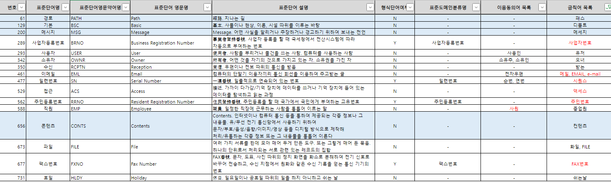

Data Governance Study - Data Standard Word Dictionary
데이터 표준 관리: 표준 단어 사전
Data Governance
이 블로그는 데이터베이스 설계의 초기 단계인 개념적 데이터 모델링에 대해 다룬다. ER(Entity-Relationship) 모델의 주요 구성 요소인 개체, 관계, 속성에 대해 설명하며, 각 요소의 특성과 표현 방법을 제시한다.
1 Data Standard Governance > Data Standard Word Dictionary
1.1 데이터 표준 단어 사전이란?
- 조직 내에서 사용되는 데이터 용어를 표준화하고 관리하기 위한 도구이다. 이는 데이터 거버넌스와 데이터 품질 관리의 중요한 구성 요소이다.
- 조직에서 사용되는 모든 데이터 용어의 공식적인 정의를 제공
- 각 용어의 의미, 사용 맥락, 형식 등을 명확히 기술
- 데이터 표준관리를 위한 표준 단어 사전을 만드는 과정은 체계적이고 협력적인 접근이 필요하다.
- 표준 단어 사전을 만드는 과정은 반복적이고 지속적으로 이루어져야 하며, 조직의 변화와 새로운 요구사항을 반영하여 계속 발전시켜 나가야 한다.
- 표준 단어 사전은 단순한 용어 목록이 아니라 조직의 데이터 자산을 효과적으로 관리하고 활용하기 위한 중요한 도구이다.
- 조직의 모든 구성원이 쉽게 접근하고 활용할 수 있어야 한다.
- 또한, 기술적인 구현뿐만 아니라 조직 문화와 프로세스의 변화도 함께 고려해야 한다.
- 표준 용어 사전과 데이터 카탈로그를 제작하기 위한 성분이 된다.
1.1.1 표준 단어
- 일반적으로 단어란 문법상 일정한 뜻과 구실을 가지는 말의 최소 단위를 의미한다.
- 정보 시스템에서 사용하는 표준 단어란 회사에서 업무상 사용하며 일정한 의미를 갖고 있는 최소 단위의 단어를 말한다.
- 표준용어를 구성 하는데 사용한다.
- 예시
- 표준 단어: 정산, 승인, 금액
- 표준 용어: 정산승인금액
- DB 속성 또는 Data Modeling을 위한 속성
속성명 데이터타입 도메인 정산승인금액 NUMBER(10) 금액n10
1.2 필요성
1.2.1 메타데이터 관리
- 각 용어에 대한 부가 정보(예: 데이터 타입, 길이, 허용 값 등)를 관리할 수 있다.
- 데이터의 의미와 구조에 대한 종합적인 이해를 제공한다.
1.2.2 커뮤니케이션 개선
- 비즈니스 사용자와 IT 전문가 사이의 의사소통을 원활하게 한다
- 편의나 관습에 따라 동일한 의미로 사용되는 이음동의어를 대표성을 지닌 한 개의 단어로 정의함으로써 의사소통과 데이터에 대한 인식의 오류를 방지할 수 있다
- 용어의 오해로 인한 프로젝트 지연이나 오류를 방지한다.
1.2.3 규정 준수
- 데이터 관련 규제 요구사항을 충족하는 데 도움을 준다.
- 데이터 관련 규제 요구사항: 데이터의 수집, 저장, 처리, 공유, 및 폐기와 관련된 법적, 규범적 기준을 의미
- 데이터 보안, 개인정보 보호, 데이터 품질, 및 데이터 관리의 투명성을 보장하기 위한 규제
- 데이터의 의미와 사용에 대한 명확한 문서화를 제공한다.
- 데이터 규제 종류
- GDPR (General Data Protection Regulation)
- EU의 개인정보 보호법
- 예시: 개인 데이터의 수집 및 처리에 대한 명시적 동의 요구, 데이터 삭제 권리(잊힐 권리) 보장
- CCPA (California Consumer Privacy Act)
- 캘리포니아 주의 소비자 개인정보 보호법
- 예시: 소비자의 개인정보 접근 권리, 개인정보 판매 거부 권리
- HIPAA (Health Insurance Portability and Accountability Act)
- 미국의 의료정보 보호법
- 예시: 환자 의료 정보의 비밀성 보장, 의료 정보 접근 로그 유지
- PCI DSS (Payment Card Industry Data Security Standard)
- 신용카드 정보 보호 표준
- 예시: 카드 소지자 데이터의 암호화, 정기적인 보안 시스템 및 프로세스 검사
- SOX (Sarbanes-Oxley Act)
- 미국의 기업 회계 개혁법
- 예시: 재무 보고의 정확성과 신뢰성을 보장하기 위한 데이터 관리 요구사항
- 개인정보 보호법
- 한국
- 예시: 개인정보 수집 시 동의 획득, 개인정보의 안전한 보관 및 파기
- 전자금융거래법
- 한국
- 예시: 전자금융 거래 기록의 보관 및 보안 요구사항
- 정보통신망법
- 한국
- 예시: 개인정보 유출 시 신고 의무, 정보보호 관리체계 인증
- 데이터 현지화 법률
- 여러 국가
- 예시: 러시아의 데이터 현지화법, 중국의 사이버보안법에 따른 데이터 현지 저장 요구
- GDPR (General Data Protection Regulation)
- 이러한 규제 요구사항을 충족하기 위해서는 데이터의 정의, 분류, 처리 방법 등이 명확히 문서화되고 관리되어야 한다.
- 표준 단어 사전은 데이터 요소를 일관되게 정의하고 분류하는 데 도움을 줌으로써, 규제 준수를 위한 기반을 제공한다.
- 예를 들어, 개인식별정보(PII)가 무엇인지, 어떤 데이터 필드가 이에 해당하는지를 명확히 정의하고 관리할 수 있게 해준다.
1.2.4 데이터 품질 향상
- 일관된 데이터 정의와 사용으로 전반적인 데이터 품질을 개선한다.
- 데이터 통합과 분석의 정확성을 높인다.
1.2.5 지식 관리
- 조직의 데이터 관련 지식을 체계적으로 축적하고 공유할 수 있다.
- 신규 직원의 온보딩과 지식 전달을 용이하게 한다.
1.2.6 시스템 통합 지원
- 서로 다른 시스템 간의 데이터 매핑과 통합을 지원한다.
- 시스템 간 데이터 불일치 문제를 줄인다.
1.3 제작시 유념해야할 사항
1.3.1 일관성 유지
- 한 개의 단어에 대해 표준화된 영문약어를 사용하여 일관성을 확보한다.
- 조직 전체에서 데이터 용어를 일관되게 사용할 수 있도록 한다.
- 동일한 개념에 대해 서로 다른 용어를 사용하는 문제를 방지한다.
1.3.2 중복 제거
- 유사하거나 중복된 용어를 식별하고 제거
1.3.3 표준화
- 명명 규칙, 약어 사용, 데이터 형식 등을 표준화
- 데이터 모델링과 시스템 개발에서 일관된 기준을 제공
- 데이터 표준 단어 용도의 목적은 조직내 정보 공유가 제 1 목적이기 때문에 반드시 공공 기관이나 권위있는 조직의 양식을 따를 필요는 없다.
- 이상적인 접근 방식은 외부 표준과 조직 내부의 요구사항을 균형 있게 고려하는 것이다.
1.4 제작 과정
1.4.1 준비 단계
- 표준 단어 사전의 목적과 범위를 명확히 한다.
- 목적이라 함은 데이터 일관성 확보(동일한 의미의 데이터 사용), 데이터 품질 향상 (데이터 처리 과정 비용 감소), 시스템 통합 지원 (여러 시스템 간 데이터 매핑과 통합), 규제 준수 지원 등을 의미한다.
- 범위는 대상 데이터 범위, 조직적 범위, 시스템 범위 등을 의미하며, 너무 광범위한 영역은 제작 실패로 이어진다.
- 이해관계자 식별: 관련 부서와 담당자들을 파악한다.
- 거버넌스 체계 수립: 단어 사전 관리를 위한 조직과 프로세스를 정립한다.
1.4.2 데이터 수집
- 기존 데이터 모델, 데이터베이스 스키마, 업무 문서 등에서 사용 중인 단어들을 수집한다.
- 업무 도메인별로 사용되는 용어들을 취합한다.
1.4.3 단어 분석 및 정제
- 동의어, 유사어, 약어 등을 식별한다.
- 업무 영역별 용어의 의미와 사용 맥락을 분석한다.
- 불필요하거나 중복된 단어들을 제거한다.
1.4.4 표준화 규칙 수립
- 약어 사용 규칙, 대소문자 규칙 등의 명명 규칙을 정의합니다.
- 단어 정의 형식을 standardization 합니다.
- 도메인별 특수 규칙을 설정한다.
- 유용한 데이터 표준안을 만들기 위해 조직 내의 각 업무 영역 또는 데이터 도메인에 맞는 고유한 규칙이나 지침을 만들어야 한다.
- 도메인 식별: 재무, 인사, 마케팅, 제조, 고객 서비스 등
- 각 도메인별 특수성 파악: 해당 도메인에서만 사용되는 용어나 개념과 도메인 특유의 데이터 형식이나 제약 조건
- 예시
- 재무 도메인의 통화 표기 규칙: “USD 1,000.00” 또는 “1,000,000 원” 형식 사용
- 재무 도메인의 회계 기간 표현: “FY2023Q2” (2023 회계연도 2분기)
- 인사 도메인의 직급 코드 체계: “M” (매니저), “D” (디렉터)
- 인사 도메인의 근속 연수 계산 규칙: 입사일 기준, 월 단위 반올림
- 마케팅 도메인의 캠페인 코드 형식: “CAM_2023_SUMMER_01”
- 마케팅 도메인의 고객 세그먼트 분류 기준: “VIP”, “REGULAR”, “NEW”
- 제조 도메인의 제품 코드 체계: “PROD-A01-R” (제품군-모델번호-버전)
- 제조 도메인의 품질 등급 표기: “A”, “B”, “C” 등급 사용
1.4.5 표준 단어 선정
- 분석된 단어들 중 표준으로 사용할 단어들을 선정
- 선정 기준을 명확히 하고, 이해관계자들의 합의를 도출
- 선정 기준 예시
- 명확성
- 의미가 명확하고 모호하지 않은 단어 선정 (일반적인 단어는 한정시킬 것)
- 예: “고객” 대신 “활성고객”과 “비활성고객”으로 구분
- 일관성
- 조직 전체에서 일관되게 사용할 수 있는 단어
- 예: 부서별로 다르게 사용되던 용어를 하나로 통일
- 간결성
- 가능한 간단하고 간결한 단어
- 예: “제품구매고객정보” 대신 “구매자정보”
- 유일성
- 중복되지 않는 고유한 의미를 가진 단어
- 예: 동음이의어 피하기
- 업계 표준 부합성
- 가능한 업계에서 널리 사용되는 표준 용어 선택
- 예: 금융업계의 “ROI” (Return on Investment)
- 확장성
- 향후 변화나 확장을 고려한 단어 선택
- 예: “2023년예산” 대신 “연간예산”
- 이해 용이성
- 비전문가도 이해하기 쉬운 단어
- 예: 전문 용어보다는 일반적인 비즈니스 용어 선호
- 번역 가능성
- 다국어 지원이 필요한 경우, 번역이 용이한 단어
- 관용구나 은유적 표현 피하기
- 기존 시스템 호환성
- 기존 시스템과의 호환성을 고려한 단어
- 예: 레거시 시스템의 주요 용어 유지
- 법규 및 규제 준수
- 관련 법규나 규제를 준수하는 단어
- 예: 개인정보보호법에 부합하는 용어 선택
- 도메인 적합성
- 해당 업무 도메인에 적합한 단어
- 예: 금융 도메인에서는 “이자율”, 제조 도메인에서는 “불량률”
- 측정 가능성
- 정량적 측정이 가능한 개념을 나타내는 단어
- 예: “고객만족도” (1-5 척도로 측정 가능)
- 약어 사용 규칙
- 약어 사용 시 일관된 규칙 적용
- 규칙에 부합하지 않는 관용어는 관용어 사용을 유지하는 것이 좋다.
- 예: “고객번호”를 “CUST_NO”로 통일
- 명확성
1.4.6 메타데이터 정의
- 각 단어에 대한 상세 정보를 정의 (정의, 동의어, 사용 예시, 관련 업무 영역 등).
- 단어 간의 관계를 정의 (상위어, 하위어, 관련어 등)
1.4.7 검토 및 승인 프로세스
- 선정된 표준 단어들에 대해 관련 부서와 전문가들의 검토를 받는다.
- 필요시 수정하고 최종 승인을 받는다.
1.4.8 표준 단어 사전 구축
- 승인된 단어들을 데이터베이스나 전문 도구에 등록한다. (엔코아, Microsoft Purview 등)
- 검색, 조회, 관리가 용이한 형태로 구성한다.
1.4.9 배포 및 교육
- 완성된 표준 단어 사전을 조직 내에 공유
- 사용 방법과 중요성에 대한 교육을 실시
1.4.10 지속적인 관리
- 새로운 단어 추가, 기존 단어 수정, 폐기 등의 프로세스를 수립한다.
- 정기적인 검토와 업데이트를 수행한다.
- 사용 현황을 모니터링하고 피드백을 수집한다.
1.4.11 통합 및 연계
- 데이터 모델링, 시스템 개발, 보고서 작성 등의 프로세스와 표준 단어 사전을 연계한다
- 연계 순서는 각 상황마다 다르다.
- 이미 ERD와 DB가 존재하는 시스템들을 통합하는 상황이라면 표준 단어 사전을 순서상 나중에 제작하는 것이 유리하다
- 그 반대라면 표준 단어사전을 먼저 만들어 DB를 만드는 것이 유리할 수 있다.
- 다른 데이터 관리 도구들과의 통합을 고려한다.
1.5 표준 단어 사전 예시
